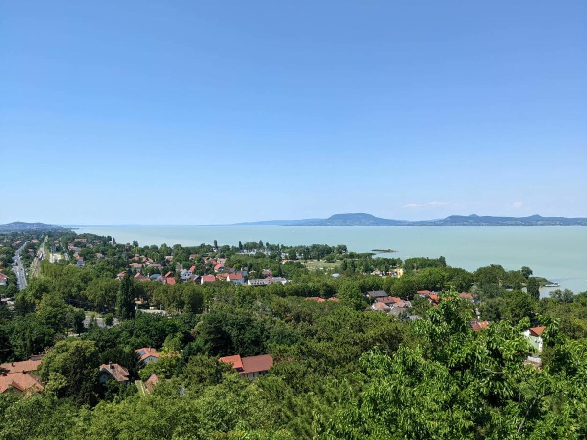
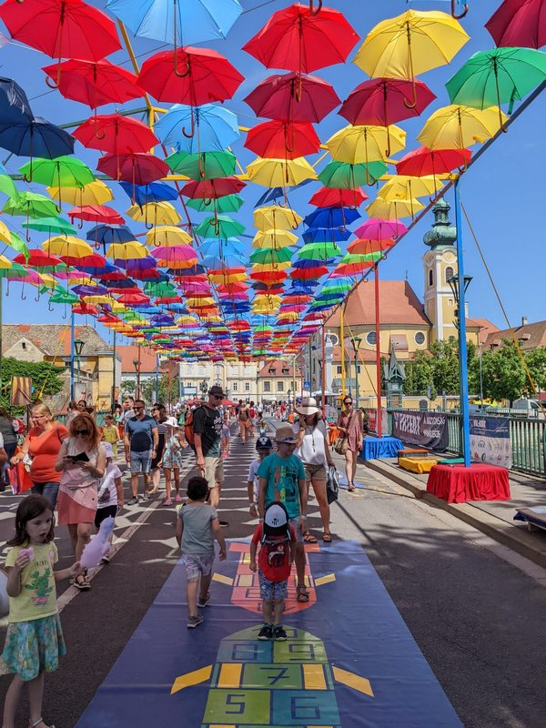
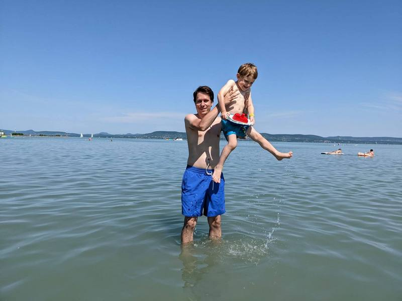
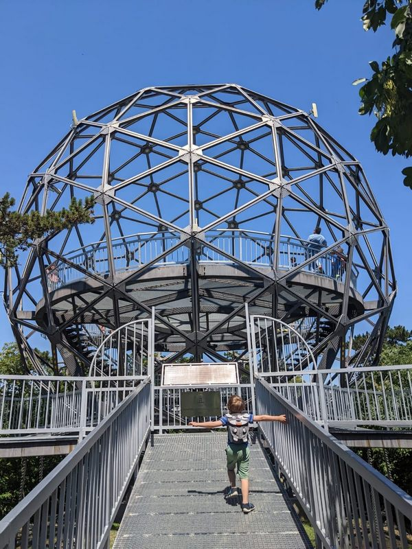
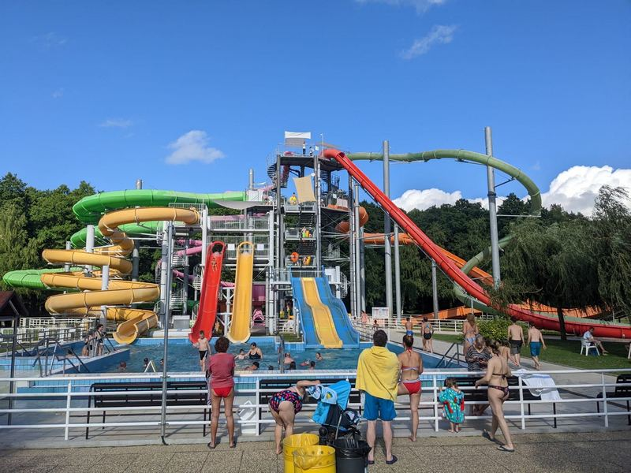
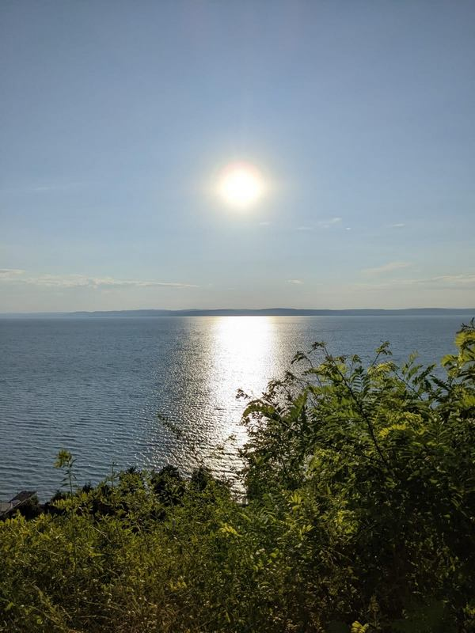

Loňské léto jsme si mimořádně užívali. Dvě báječné dovolené - jedna v horách a druhá “skoro u moře” - a do toho kupa zážitků a dojmů z navštívených míst. Letos nás kvůli finišování na baráčku téměř nic nečeká, a tak nezbývá, než oprášit loňské vzpomínky a cestovat alespoň v duchu znovu :-)

Nekonečný Balaton
Balaton jsme doma svorně označili za naši zatím nejlepší rodinnou dovolenou s O. A to se přitom jednalo o totální hurá akci zcela spontánně naplánovanou asi 4 dny před odjezdem. Tak už to s těmi nejlepšími zážitky bývá :-) Cestu jsme zvládli i s O. celkem na pohodu a se dvěma většími zastávkami - v Bratislavě na oběd a v Győru na kafe. V lázeňském městečku Győr se ten víkend právě konala nějaká akce pro děti na zahájení prázdnin, a tak bylo centrum městečka krásně vyzdobené a plné různých atrakcí, což bylo fajn zpestření dlouhé cesty.

Zastávka v Győru
První část pobytu jsme strávili v malebném městečku Balatonlelle, kde jsme si užívali především koupání v neuvěřitelně mělkých a teplých vodách Balatonu. Bydleli jsme v malém apartmánku jen kousek od pláže. Přes den jsme se koupali a jezdili na šlapadle, večer seděli na terase a grilovali. Jídlo jsme řešili nákupy v nedalekém Lidlu. Letos už by to asi vzhledem k inflaci nebyla tak laciná dovolená, ale loni to (snad až na ty vystřelené ceny benzínu) vycházelo cenově srovnatelně jako tady u nás v ČR, což bylo super.

Maďarské moře
Krom koupání jsme z Lelle podnikali i menší výlety - třeba na nedalekou rozhlednu netradičních tvarů v Balatonboglár, odkud je nádherný výhled na jezero.

Vzhůru na rozhlednu!
Výlet, na který O. dodneška vzpomíná jako na největší zážitek z Maďarska, vznikl také jako celkem spontánní nápad, jak vyplnit jedno deštivé dopoledne. Vyrazili jsme do lázní Zalakaros, kde je naprosto úžasný aquapark s triliardou atrakcí pro malé i velké. Krom léčivého bazénu, kam je povolen vstup pouze pro 14+, je celý areál maximálně baby friendly - všechny bazény jsou vyhřívané a areál je plný dětských atrakcí od různých klouzaček, tobogánů, vodních děl a další hracích prvků. Dokonce i já jsem se po sto letech odhodlala a šla na tobogán, což považuji za nejvíce adrenalinový zážitek celé dovolené :-D. Dali jsme si tu také náš první a jediný langoš :-)

Na tom zeleném jsem jela :-)!
Protože jsme nechtěli strávit celou dovolenou válením u vody, na druhou polovinu pobytu jsme se přesunuli z jižního břehu Balatonu na ten severní, který je méně vhodný na koupání, ale zase tu najdete rozmanitější možnosti pro výlety. Cestou jsme se ještě (zčásti kvůli tomu názvu, přiznávám :-D), zastavili na krásné vyhlídce v městečku Balatonvilágos a pak už hurá na sever za dalšími zážitky. O těch ovšem zase až příště ;-)

Balatonvilágos